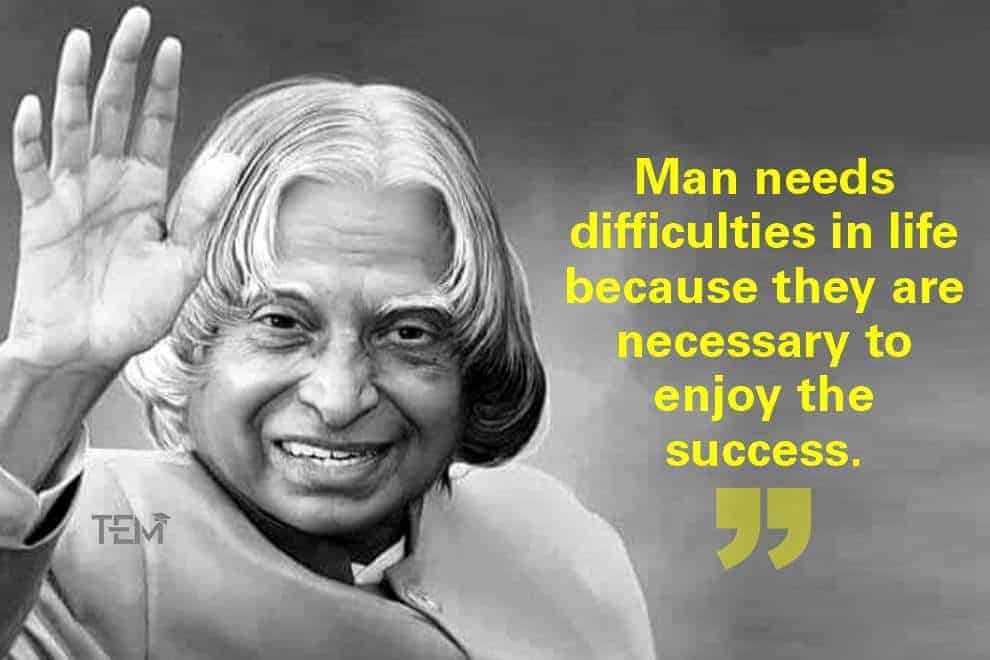
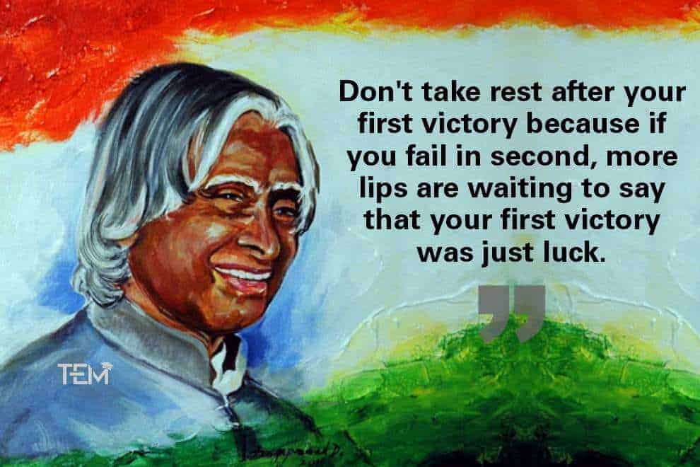

Family
Father

APJ Abdul Kalam's Father was Jainulabiddin Marakayar, he was a boat owner and imam of a local mosque. His father owned a ferry that took Hindu pilgrims back and forth between Rameswaram and the now uninhabited Dhanushkodi.[
Mother

APJ Abdul Kalam's Mother is Ashiamma Jainulabiddin. she was a housewife.
siblings

APJ Abdul Kalam has 3 brothers and 1 sister. Among them APJ Abdul Kalam was the youngest of all the children in the family. The names of the siblings are "Mustafa Kamal", "Mohammed Muthu" "Meera Lebbai Maraikayar" and "Kasim Mohammed"
School Life
Schwartz Higher Secondary School,

He spent hours on his studies, especially mathematics. he used to sit in school with brahman friend on the first bench, on day a new teacher came and said kalam Ji to sit on the last bech beacuse a muslim cannot sit with a brahmin,that he decided to sit on last bech and decided to change the world. Dr. Kalam says, “While children are struggling to be unique, the world around them is trying all means to make them look like everybody else.” After completing his education at the Schwartz Higher Secondary School, Ramanathapuram, Kalam went on to attend Saint Joseph's College, Tiruchirappalli, then affiliated with the University of Madras, from where he graduated in physics in 1954. he was also a middle stuednt in school. his favourite subject was Maths
CollegeLife
Madras Institute of Technology

He has donegraudation in Physics on 1954. he was asked to draw a low level Aircraft,but on the submission day his teacher did not like the project and asked himt to draw another model within 3 days to get his scholarship, it was too difficult to draw a moel within 3 days but he did not give up and worked day and night without food to do his project. after 3 days when he showed his project . his teacher was surprised wit his model.
After CollegeLife
IAF,DRDO and ISRO
IAF

After Doing his Engireeing ,Kalam Ji had a Draeam of going into Indian Air force. but he couldn't beacuse in the interview on ly 8 have to be get selected from 25 and he was at 9th position. with his dreams of gettiong into indian air force ,he turned his way towards Defence Research and Development Organisation.
DRDO

In June 1982, Dr Kalam shouldered the responsibility of shaping the missile development programme. His moment of reckoning in DRDO came with the successful completition of the IGMDP. The success of the missile programme demonstrated his concept of management by partnership and the sobriquet 'the Missile Man of India'. he was promoted to INCOSPAR with Vikram Sarabhai. in DRDO he launched India's 1st missile from nearby church of kerela with taking the parts of rocket with his cycle and bullock-cart launching from the launch pad of thumba village.
ISRO

during he was the first project directorof India's first satellite project of (SALV) Satellite launch vehicle. it took 10 years to make this satellite, during the working of the project father of APJ abdul kalam died at the age of 102 years, but he still remained in the project and during its launch time , there was a technical issue in the second stage and drowned into bay of bengal.
NASA

In 1963 to 1964, he visited NASA's Langley Research Center in Hampton, Virginia; Goddard Space Flight Center in Greenbelt, Maryland; and Wallops Flight Facility Between the 1970s and 1990s, Kalam made an effort to develop the Polar Satellite Launch Vehicle (PSLV) and SLV-III projects, both of which proved to be successful.
Padma Bhushan
Padma Bhushan

Apj abdul kalam was awarded with Padma Bhushan in 1981 because his contribution in agni missile.APJ abdul kalma was awardede with Padma Vibhushan in 1990 with prithvi.
Padma Vibhushan
Padama Vibhushan
Apj abdul kalam was awarded with Bharat RatnaPadma Vibhushanin 1990 for his contribution to the scientific research and modernisation of defence technology in India
Bharat Ratna
Bhart Rtana
Apj abdul kalam was awarded with Bharat Ratna in 1997 for his contribution to the scientific research and modernisation of defence technology in India. he was awarded due the mission of Pokhran-II , it was a nuclear bomb that was tested by dodging the CIA of U.S. Kalam ji was the chief Cordinator of this program
Thoughts
30 Motivational thoufhts given by Apj Abdul Kalam





About Misiile Man Of India
About His Life

Apj abdul kalam was born on 15 octuber,1931 Rameshwaram. he belongs to a sunni muslim family. His father owned a ferry that took Hindu pilgrims back and forth between Rameswaram and the now uninhabited Dhanushkodi Kalam was the youngest of four brothers and one sister in his family. his father was aiman in the nearby mosque. his early genaerations were very wealthy people who had a great wealth. during 1920's his father lost his all wealth and after som years kalm was near to born . when he grew up , to fulfill the expenes of their family , he used to sell newspaper daily at the age of 10 years. he have desire to gain knowledge so ,he used to read newspaper daily .
After he retired from DRDO in the year 1997 . after three years he was offered by the Prime Minister of india to become the president of india, when he was at that time he was about to give lecture to students in shillong institute. he asked the prime minister to give him two hours to decide. after that he decided to be the prsident to india. he served as the 11th president of india , he won 2002 presidental election . he remained president till 2007.
Death
About His Death

On 27 July 2015, Kalam travelled to Shillong to deliver a lecture on "Creating a Livable Planet Earth" at the Indian Institute of Management Shillong. While climbing a flight of stairs, he experienced some discomfort, but was able to enter the auditorium after a brief rest. At around 6:35 p.m. IST, only five minutes into his lecture, he collapsed. He was rushed to the nearby Bethany Hospital in a critical condition; upon arrival, he lacked a pulse or any other signs of life. Despite being placed in the intensive care unit, Kalam was confirmed dead of a sudden cardiac arrest at 7:45 p.m. IST. His last words, to his aide Srijan Pal Singh, were reportedly: "Funny guy! Are you doing well Following his death, Kalam's body was airlifted in an Indian Air Force helicopter from Shillong to Guwahati, from where it was flown to New Delhi on the morning of 28 July in an air force C-130J Hercules. The flight landed at Palam Air Base that afternoon and was received by the President, the vice-president, the Prime Minister, Chief Minister of Delhi Arvind Kejriwal, and the three service chiefs of the Indian Armed Forces, who laid wreaths on Kalam's body. His body was then placed on a gun carriage draped with the Indian flag and taken to his Delhi residence at 10 Rajaji Marg; there, the public and numerous dignitaries paid homage, including former prime minister Manmohan Singh, Congress President Sonia Gandhi and Vice-president Rahul Gandhi, and Uttar Pradesh Chief Minister Akhilesh Yadav On the morning of 29 July, Kalam's body, wrapped in the Indian flag, was taken to Palam Air Base and flown to Madurai in an air force C-130J aircraft, arriving at Madurai Airport that afternoon. His body was received at the airport by the three service chiefs and national and state dignitaries, including cabinet ministers Manohar Parrikar, Venkaiah Naidu, Pon Radhakrishnan and the governors of Tamil Nadu and Meghalaya, K Rosaiah and V. Shanmuganathan. After a brief ceremony, Kalam's body was flown by air force helicopter to the town of Mandapam, from where it was taken in an army truck to his hometown of Rameswaram. Upon arriving at Rameswaram, his body was displayed in an open area in front of the local bus station to allow the public to pay their final respects until 8 p.m. that evening. On 30 July 2015, the former president was laid to rest at Rameswaram's Pei Karumbu Ground with full state honours. Over 350,000 people attended the last rites, including the Prime Minister, the governor of Tamil Nadu and the chief ministers of Karnataka, Kerala and Andhra Pradesh